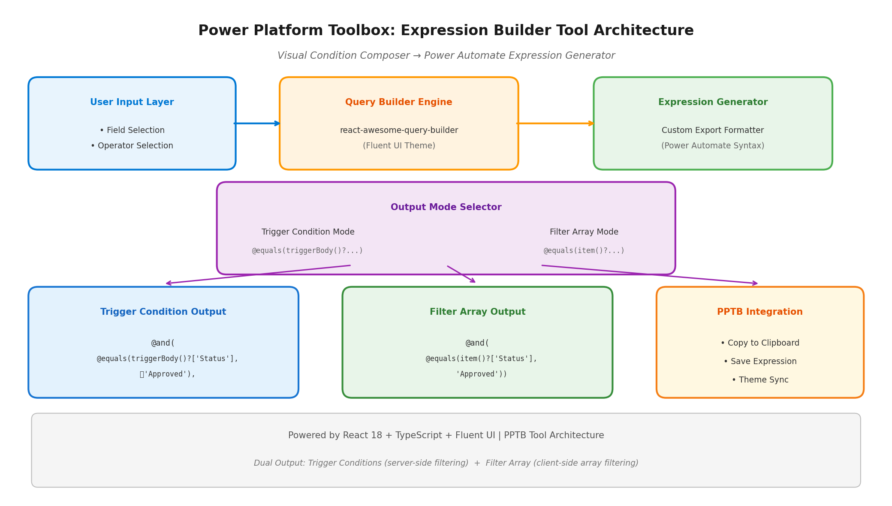
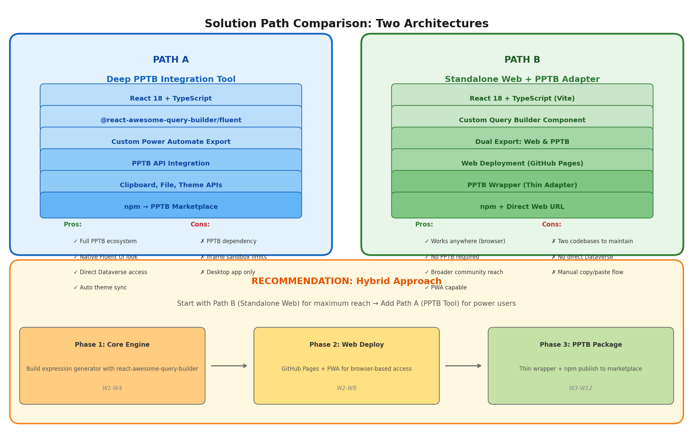
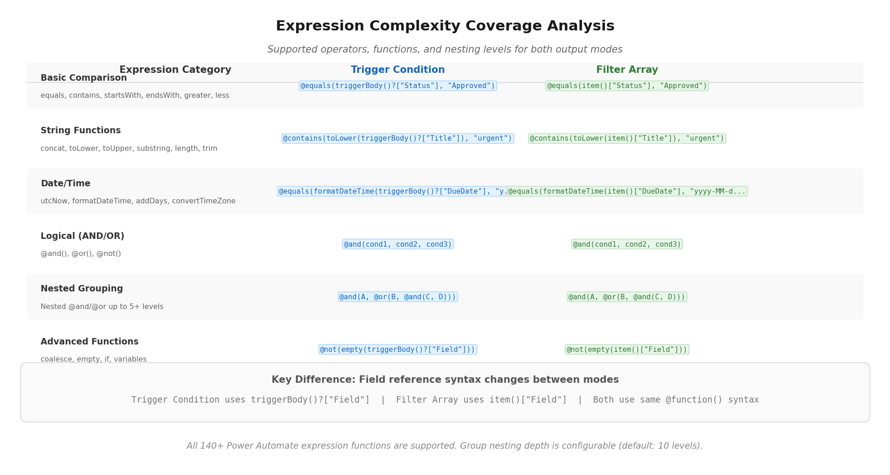

Feasibility Analysis & Solution Design — June 2026
TL;DR: Both concepts—a visual trigger condition composer and a reusable Filter Array builder—are valid, high-impact, and technically feasible. The two modes share 90%+ of their underlying logic and should be delivered as a single unified tool. The recommended approach is a hybrid architecture: build a standalone web app first for maximum community reach, then package it as a Power Platform Toolbox (PPTB) tool for power users. This path maximizes adoption, minimizes maintenance overhead, and aligns with the open-source, long-term community mission.
Power Automate expressions are a gatekeeper skill that separates citizen developers from productive flow builders. While Microsoft touts the platform as "low-code," the reality is that any non-trivial flow eventually requires expressions—especially for trigger conditions and Filter Array actions. The community has documented this friction extensively across forums, blogs, and Stack Overflow threads. The trigger condition syntax, in particular, is a recurring source of confusion because it requires manually writing expressions like @equals(triggerBody()?['Status'], 'Approved') with no visual assistance whatsoever.
Microsoft's own documentation acknowledges this gap by recommending a Filter Array workaround: users temporarily add a Filter Array action, build conditions visually, switch to advanced mode, copy the generated expression, paste it into the trigger condition, and delete the Filter Array action. This convoluted workflow is a tacit admission that the platform lacks a proper visual expression builder. The fact that an official Microsoft documentation page recommends creating and deleting a dummy action just to generate syntax speaks volumes about the user experience gap. This workaround is not discoverable to new users, breaks the mental model of flow building, and introduces unnecessary steps into what should be a single, fluid interaction.
| Impact Dimension | Assessment | Evidence |
|---|---|---|
| Frequency of Need | Very High | Every flow with a trigger condition or array filtering needs expressions; 140+ functions exist in the expression language |
| Skill Barrier | High | Syntax is case-sensitive, requires @ prefix, uses null-safe navigation (?[]), and nesting quickly becomes unreadable |
| Error Cost | High | A malformed trigger condition silently skips flow runs; debugging requires examining run history with no detailed feedback |
| Community Demand | Confirmed | Dedicated blog posts, YouTube tutorials, and forum threads specifically address "how to write trigger conditions" |
| Existing Workarounds | Inadequate | The Filter Array workaround is clunky; third-party tools like jsontoexpression.workappholics.com exist but are narrowly scoped |
The expression language itself is powerful—derived from Azure Logic Apps with over 140 functions spanning strings, collections, logical comparison, conversion, math, date/time, workflow context, and URI parsing. However, this power is locked behind a syntax wall that citizen developers cannot easily climb. The proposed tool directly addresses this by providing a visual, condition-action-style interface that generates the correct expression syntax automatically, democratizing access to one of Power Automate's most important optimization features.
The trigger condition composer and Filter Array builder are two sides of the same coin. Both generate Power Automate expressions using the identical function library (equals, contains, greater, and, or, not, etc.). The only material difference is the field reference syntax: trigger conditions use triggerBody()?['FieldName'] while Filter Array conditions use item()?['FieldName']. This means a single query builder engine can serve both purposes with a simple mode toggle that swaps the field reference prefix. Building them as separate tools would duplicate 90%+ of the codebase, fragment the user experience, and increase maintenance burden for an open-source community project.

The proposed tool follows a three-layer architecture designed for maximum reusability across deployment targets. At the top, the User Input Layer provides a familiar condition-building interface where users select fields, operators, and values through dropdown menus—no manual expression writing required. The middle layer, the Query Builder Engine, is powered by react-awesome-query-builder with Microsoft's Fluent UI theme, providing the drag-and-drop condition composition, nested grouping, and validation logic. The bottom layer, the Expression Generator, contains a custom export formatter that translates the query builder's internal representation into valid Power Automate expression syntax. An Output Mode Selector allows switching between Trigger Condition mode (triggerBody()? references) and Filter Array mode (item()? references), with both paths feeding into PPTB integration APIs for clipboard copy, file save, and theme synchronization.
Path A delivers the expression builder as a native Power Platform Toolbox (PPTB) tool—a React-based web application that runs inside PPTB's sandboxed iframe environment with full access to the ToolBox API and Dataverse API. This path prioritizes ecosystem integration, native look-and-feel through Fluent UI, and direct Dataverse connectivity for dynamic field discovery. The tool would be distributed through the PPTB marketplace as an npm package, discoverable and installable by any PPTB user with a single click.
The PPTB platform provides an ideal hosting environment for this type of developer tooling. It uses a VS Code Extension Host-inspired architecture where each tool runs in an isolated iframe with structured API access via postMessage. The platform enforces per-tool Content Security Policies, manages authentication to Dataverse environments (including MFA), and provides a consistent Microsoft Fluent UI chrome that makes third-party tools feel native. For a tool that generates Power Automate expressions, being embedded in the same desktop application that admins and developers already use for Dataverse management creates a natural workflow integration.
| Layer | Technology | Rationale |
|---|---|---|
| Framework | React 18 + TypeScript + Vite | PPTB officially supports React samples; Vite provides fast HMR and optimized builds |
| Query Builder | @react-awesome-query-builder/fluent |
Native Fluent UI support aligns with PPTB's Microsoft design system; highly configurable for custom export formats |
| State Management | React hooks + Context API | Sufficient for tool scope; avoids Redux overhead in iframe environment |
| PPTB APIs | toolboxAPI.utils.copyToClipboard, showNotification, getActiveConnection() |
Clipboard for expression copy, notifications for user feedback, connections for field metadata |
| Build Output | Static dist/ folder with index.html entry point |
Required PPTB tool format; served from local filesystem |
| Distribution | npm package → PPTB marketplace submission | Standard PPTB publishing flow via powerplatformtoolbox.com/submit-tool |
The core technical challenge is implementing a custom export formatter that translates react-awesome-query-builder's internal query tree into Power Automate expression syntax. The library natively supports exporting to MongoDB, SQL, JsonLogic, SpEL, and ElasticSearch, and provides hooks for custom formatters through config.settings.formatField, formatValue, and formatConj functions. For Power Automate, the formatter must:
== → equals(), contains → contains(), > → greater(), etc.triggerBody()?['field'] for trigger conditions or item()?['field'] for Filter Array.@and() or @or() wrappers with proper nesting.@ for trigger conditions; Filter Array expressions also require @ prefix in advanced mode.@contains(toLower(triggerBody()?['Title']), 'urgent').The react-awesome-query-builder Fluent UI package provides all necessary widgets—dropdown selects for fields and operators, text inputs for values, date pickers for temporal conditions, and group containers for nested logic. The library also supports functions in both left-hand and right-hand sides of conditions, enabling advanced expressions like formatDateTime(triggerBody()?['DueDate'], 'yyyy-MM-dd') compared against utcNow('yyyy-MM-dd'). This capability is essential for date-based trigger conditions, which are among the most common and most error-prone expression types in the community.
| Feature | PPTB API Used | User Value |
|---|---|---|
| One-click copy | toolboxAPI.utils.copyToClipboard(text) |
Expression copied directly to clipboard; paste into Power Automate immediately |
| Theme synchronization | toolboxAPI.utils.getCurrentTheme() |
Tool automatically matches PPTB light/dark mode |
| Field metadata discovery | toolboxAPI.connections.getActiveConnection() + Dataverse API |
Auto-populate field dropdowns from connected Dataverse environment |
| Expression library | toolboxAPI.settings API |
Save frequently-used expressions for reuse across sessions |
| Notifications | toolboxAPI.utils.showNotification(options) |
Success/error feedback when copying or validating expressions |
Path B takes a "web-first, wrap-later" approach. The core expression builder is developed as a standalone React web application that can be deployed to GitHub Pages (or any static host) and used directly in any browser—no PPTB installation required. A thin PPTB adapter wrapper is then created to package the same application as a PPTB tool, sharing 100% of the core code. This path prioritizes maximum community reach, instant accessibility, and progressive enhancement from web to desktop.
The rationale for this approach is rooted in adoption dynamics. PPTB, while growing rapidly, is still a desktop application that users must download and install. A web-based tool removes all friction: anyone with a browser can open the URL, build an expression, and copy it to their clipboard. For citizen developers who may not even know PPTB exists, the web app becomes the entry point into the ecosystem. Power users who already use PPTB get the same functionality with added conveniences like theme sync and Dataverse field discovery through the adapter wrapper.
| Layer | Technology | Rationale |
|---|---|---|
| Core Framework | React 18 + TypeScript + Vite | Identical to Path A; shared codebase |
| Query Builder | @react-awesome-query-builder/fluent | Same component; works in any browser context |
| Web Deployment | GitHub Pages / Vercel / Netlify | Free, reliable static hosting for open-source projects |
| PWA Support | Vite PWA plugin | Offline capability, installable as desktop shortcut |
| PPTB Adapter | Thin iframe wrapper (~50 lines) | Loads the same built dist/ output inside PPTB; adds API bridge |
| Clipboard (Web) | Navigator Clipboard API | Modern browsers support navigator.clipboard.writeText() |
| State Persistence | localStorage / IndexedDB | Save expressions, recent fields, and user preferences |
The PPTB adapter is a minimal wrapper that demonstrates the elegance of this architecture. The core application is built as a self-contained static site that expects to receive configuration and API access through a well-defined JavaScript interface. When running standalone, it uses the browser's native APIs (Clipboard, localStorage, fetch). When running inside PPTB, the adapter injects the PPTB API implementations through the same interface:
// Core app uses this interface — implementation swapped at runtime
interface IPlatformAdapter {
copyToClipboard(text: string): Promise<void>;
getCurrentTheme(): Promise<'light' | 'dark'>;
getDataverseFields?(): Promise<Field[]>; // Optional: only in PPTB
saveExpression(name: string, expr: string): Promise<void>;
}
// Web implementation
const webAdapter: IPlatformAdapter = {
copyToClipboard: (text) => navigator.clipboard.writeText(text),
getCurrentTheme: () => Promise.resolve('light'),
saveExpression: (name, expr) => localStorage.setItem(name, expr),
};
// PPTB implementation (in adapter wrapper)
const pptbAdapter: IPlatformAdapter = {
copyToClipboard: (text) => window.toolboxAPI.utils.copyToClipboard(text),
getCurrentTheme: () => window.toolboxAPI.utils.getCurrentTheme(),
getDataverseFields: () => fetchFieldsFromActiveConnection(),
saveExpression: (name, expr) => window.toolboxAPI.settings.set(name, expr),
};This pattern means 100% of the UI and expression logic is shared between web and PPTB deployments. Only the platform-specific API implementations differ, and those are thin adapters that can be maintained independently. For an open-source community project with limited maintainer bandwidth, this architectural decision dramatically reduces the long-term maintenance surface area.
| Channel | Method | Audience | Effort |
|---|---|---|---|
| GitHub Pages | Auto-deploy via GitHub Actions on push to main | Entire Power Platform community | One-time CI setup |
| PPTB Marketplace | npm publish → submit at powerplatformtoolbox.com/submit-tool | PPTB power users | Package.json + icon |
| npm (direct) | npm install @scope/expression-builder for custom integrations | Developers embedding the component | Standard npm publish |
| PWA Install | Browser "Add to Home Screen" / "Install App" prompt | Mobile and desktop casual users | Vite PWA plugin configuration |

| Dimension | Path A: Deep PPTB Integration | Path B: Standalone Web + Adapter | Recommendation |
|---|---|---|---|
| Initial Development Effort | Medium (~4-6 weeks) | Medium (~4-6 weeks core + 1 week adapter) | Comparable; shared core reduces delta |
| User Reach | Limited to PPTB install base | Unlimited — any browser | Path B wins on adoption |
| Dataverse Integration | Native — live field discovery via Dataverse API | Manual field entry (or CSV import) | Path A advantage for power users |
| Look & Feel | Perfect Fluent UI chrome match with PPTB | Fluent UI standalone (still professional) | Path A slight edge |
| Maintenance Burden | Single target, PPTB API dependencies | Dual targets but 95% shared code | Path B's adapter pattern minimizes duplication |
| Community Contribution | Requires PPTB knowledge to contribute | Lower barrier — standard React web dev | Path B attracts more contributors |
| Offline Capability | Desktop app = always offline | PWA enables offline after first load | Comparable |
| Clipboard Integration | One-click via PPTB API | Two-click (copy button) or Ctrl+C | Path A marginally smoother |
| Long-term Sustainability | Tied to PPTB platform evolution | Independent; can outlive any single platform | Path B more resilient |
| Open-source Alignment | Good | Excellent — web standards, no vendor lock-in | Path B better for community mission |
The analysis points conclusively to a hybrid implementation strategy that combines the strengths of both paths while mitigating their weaknesses. The recommended roadmap is:
react-awesome-query-builder/fluent, implementing the custom Power Automate export formatter and dual-mode output (Trigger Condition + Filter Array).This phased approach de-risks development by validating the core engine with real users before investing in platform-specific integrations. It also creates a natural funnel: web users who adopt the tool and later discover PPTB will find a seamless upgrade path to the integrated version.

While trigger conditions and Filter Array expressions share the same function library, they differ in field reference syntax and execution context. Understanding these differences is essential for building a correct expression generator.
| Aspect | Trigger Conditions | Filter Array |
|---|---|---|
| Field Reference | triggerBody()?['FieldName'] | item()?['FieldName'] |
| Expression Prefix | @ required at start | @ required at start (advanced mode) |
| Multiple Conditions | Each row is ANDed by default; use @or() for OR | Use @and() or @or() explicitly |
| Execution Timing | Evaluated before flow starts (server-side) | Evaluated during flow run (client-side) |
| Performance Impact | Prevents unnecessary flow runs; saves API calls | Processes arrays in-memory; efficient vs. loops |
| Error Handling | Silent skip on malformed expression (hard to debug) | Visible error in flow run history |
| Dynamic Content | Not allowed — must use raw expressions only | Not allowed in advanced mode — raw expressions only |
The tool should support all 140+ Power Automate expression functions organized into logical categories. The following table maps the most commonly used functions to their query builder equivalents:
| Category | Functions | Query Builder Operator | Example Output |
|---|---|---|---|
| Equality | equals | == | @equals(triggerBody()?['Status'], 'Approved') |
| Containment | contains | contains | @contains(triggerBody()?['Title'], 'Urgent') |
| Prefix/Suffix | startsWith, endsWith | begins_with, ends_with | @startsWith(triggerBody()?['Email'], 'admin') |
| Comparison | greater, less, greaterOrEquals, lessOrEquals | >, <, >=, <= | @greater(triggerBody()?['Amount'], 1000) |
| String | toLower, toUpper, trim, length | Function wrappers | @contains(toLower(...), 'value') |
| Date/Time | utcNow, formatDateTime, addDays | Function wrappers | @equals(formatDateTime(...), utcNow('yyyy-MM-dd')) |
| Logical | and, or, not | Group conjunctions | @and(A, @or(B, C)) |
| Null Check | empty, coalesce | is_empty, is_null | @not(empty(triggerBody()?['Field'])) |
One of the most powerful and most error-prone aspects of Power Automate expressions is nested logical grouping. The tool must handle arbitrary nesting of @and() and @or() functions up to a configurable depth (recommended default: 10 levels). Consider this real-world example from a community forum:
@and(
contains(triggerBody()?['FilenameWithExtension'], '.xlsm'),
@or(
@and(
equals(triggerOutputs()?['body/ModerationStatus'], 'Approved'),
equals(triggerOutputs()?['body/IsCheckedOut'], false)
),
@and(
equals(triggerOutputs()?['body/ModerationStatus'], 'Denied'),
equals(triggerOutputs()?['body/IsCheckedOut'], false)
)
)
)
This expression demonstrates three levels of nesting: an outer @and(), containing a @contains(), which contains an @or(), which contains two inner @and() groups. Writing this manually is error-prone due to bracket matching and comma placement. The visual query builder eliminates this entire class of errors by representing the logic as a tree of nested condition groups, with the export formatter responsible for generating syntactically correct, properly parenthesized output.
Every PPTB tool requires a package.json file with PPTB-specific fields. The expression builder tool's manifest would look like:
{
"name": "@powerplatform-community/expression-builder",
"version": "1.0.0",
"displayName": "Power Automate Expression Builder",
"description": "Visual condition composer for trigger conditions and Filter Array expressions",
"main": "index.html",
"icon": "icons/expression-builder.svg",
"license": "MIT",
"contributors": [
{ "name": "Community Contributors", "url": "https://github.com/powerplatform-community/expression-builder" }
],
"configurations": {
"minAPIVersion": "1.2.0",
"categories": ["Development", "Power Automate"],
"keywords": ["expressions", "trigger conditions", "filter array", "power automate"]
},
"features": {
"clipboard": true,
"notifications": true,
"settings": true
}
}The manifest declares the required PPTB API version (1.2.0 for clipboard and theme APIs), categorizes the tool for marketplace discovery, and requests only the permissions it needs. The @pptb/types package provides a CLI validator (pptb-validate) that checks the manifest against PPTB's review criteria before publishing, reducing the risk of marketplace submission rejection.
The PPTB tool publishing process follows a well-documented pipeline:
npm publish with the tool's built dist/ folderpowerplatformtoolbox.com/submit-toolUpdates follow the same flow: publish a new version to npm, PPTB detects the update, and users see an update badge in their installed tools panel. The update process is atomic—if it fails, the previous version remains functional.
The first phase focuses on building the expression generation engine that will be shared across both deployment targets. This is the highest-risk, highest-value component—everything else is packaging and integration.
| Week | Deliverable | Technical Details |
|---|---|---|
| W1 | Project scaffolding + Query builder integration | React 18 + Vite + TypeScript + @react-awesome-query-builder/fluent; basic layout and theming |
| W2 | Field configuration system | Define field types (text, number, boolean, date, choice), operators per type, and value widgets |
| W3 | Custom Power Automate export formatter | Implement formatField, formatValue, formatOp, formatConj hooks to generate @function() syntax |
| W4 | Dual-mode output + validation | Trigger Condition mode (triggerBody()?) and Filter Array mode (item()?); expression validation and preview |
With the core engine validated, the second phase makes it accessible to the widest possible audience through web deployment.
| Week | Deliverable | Technical Details |
|---|---|---|
| W5 | Expression library management | localStorage-based save/load of frequently-used expressions; import/export as JSON |
| W6 | PWA configuration + offline support | Vite PWA plugin; service worker for offline expression building |
| W7 | GitHub Actions CI/CD | Automated build, test, and deploy to GitHub Pages on every push to main |
| W8 | Community documentation | README, usage examples, contributing guide, expression cookbook with common patterns |
The final phase packages the core engine as a PPTB tool for users who want native integration with their Power Platform environment.
| Week | Deliverable | Technical Details |
|---|---|---|
| W9 | PPTB adapter wrapper | Thin iframe wrapper that injects toolboxAPI implementations into the core app's adapter interface |
| W10 | Dataverse field discovery | Use toolboxAPI.connections.getActiveConnection() + Dataverse API to auto-populate field dropdowns from the connected environment |
| W11 | PPTB-specific features | Theme sync via getCurrentTheme(), one-click copy via copyToClipboard(), expression persistence via Settings API |
| W12 | Marketplace submission | npm publish, manifest validation with pptb-validate, submit via powerplatformtoolbox.com/submit-tool |
| Risk | Likelihood | Impact | Mitigation |
|---|---|---|---|
| PPTB API changes break integration | Medium | High | Adapter pattern isolates PPTB-specific code; core engine remains independent |
| react-awesome-query-builder API changes | Low | Medium | Pin to stable major version; monitor changelogs; vendor if necessary |
| Power Automate expression syntax changes | Low | High | Follow Azure Logic Apps documentation (source of truth); community will flag changes quickly |
| Low community adoption | Medium | Medium | Web-first approach maximizes reach; PWA reduces friction; GitHub SEO drives discovery |
| Maintainer burnout (open source) | Medium | High | Simple architecture, well-documented code, modular design makes contribution easy; hybrid approach splits effort across phases |
| Complex nested expressions exceed UI limits | Low | Medium | Configurable nesting depth; "expert mode" for raw expression editing as fallback |
The proposed expression builder occupies a unique position in the Power Platform tooling landscape. Unlike general-purpose query builders, it targets a specific, well-defined pain point with a concrete output format. Unlike the existing Filter Array workaround, it provides a purpose-built interface without the overhead of creating and deleting dummy actions. And unlike proprietary commercial tools, it is open-source, free, and community-maintained—aligning perfectly with the ethos of projects like XrmToolBox and Power Platform Toolbox.
The community demand is quantifiable and persistent: Microsoft Learn documentation dedicates an entire page to explaining trigger condition syntax with multiple examples. Blog posts from MVPs and community experts regularly explain "how to write trigger conditions" as if it were a skill worth teaching. Stack Overflow questions about Power Automate expressions consistently rank among the most-viewed in the platform's tags. The tool does not need to create demand—it needs to capture existing demand with a better user experience.
The technical foundation is solid and future-proof: react-awesome-query-builder is a mature, actively maintained library with 3,000+ GitHub stars, TypeScript support, and a plugin architecture that supports custom export formats. PPTB is an emerging but well-architected platform with clear documentation, sample code, and a growing marketplace. Power Automate expressions are derived from Azure Logic Apps, which has been stable for years and shows no signs of syntax changes. The risk of technical obsolescence is minimal.
The open-source model ensures long-term sustainability: by building a tool that the community can fork, extend, and maintain independently of any single contributor, the project gains the resilience needed to remain useful for years. The hybrid architecture—web-first with optional PPTB integration—further de-risks the project by avoiding vendor lock-in and ensuring the tool remains accessible regardless of platform evolution.
The research, architecture design, and implementation planning are complete. The path forward is clear: build the core expression engine first, validate it with the community as a web app, then package it for PPTB integration. The estimated effort is 12 weeks for a single developer working part-time, or 4-6 weeks for a focused full-time effort.
The next concrete steps are:
PowerPlatformToolBox organization or a dedicated community namespaceThis is a tool that the Power Platform community needs, wants, and will use. The question is not whether to build it, but how quickly we can get it into users' hands.